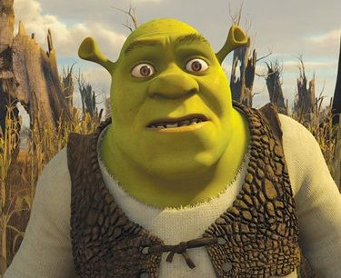
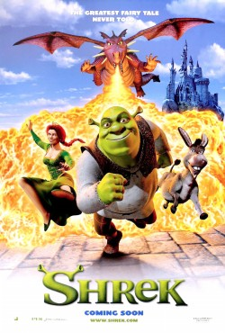
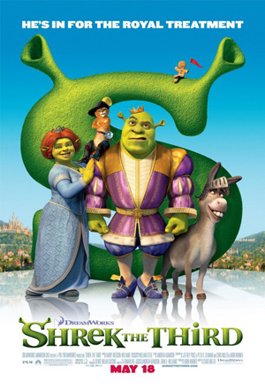

Shrek

Shrek não é apenas um ogro de contos de fadas, ele é uma desconstrução completa do arquétipo de herói clássico. Enquanto histórias tradicionais colocam príncipes bonitos e corajosos no centro, Shrek representa o oposto, alguém marginalizado pela aparência e rejeitado pela sociedade, mas que possui profundidade emocional e valores sólidos.




Shrek 1:
Oscar
Ganhou o primeiro prêmio da história de Melhor Filme de Animação no Academy Awards (2002).
Isso foi histórico, porque essa categoria estreou justamente naquele ano.
Também foi indicado a Melhor Roteiro Adaptado (algo raro para animações).
BAFTA
Venceu como Melhor Filme de Animação no BAFTA Awards.
Ganhou vários Annie Awards, considerados o “Oscar da animação”.
Shrek 2:
Indicado ao Oscar de Melhor Animação, mas perdeu para Os Incríveis.
Ganhou vários Annie Awards.
Também recebeu indicação no BAFTA Awards.
Shrek 3:
Não teve tanto reconhecimento em grandes prêmios quanto os anteriores.
Recebeu algumas indicações menores, mas sem vitórias de destaque.
Shrek para sempre:
Foi indicado a alguns prêmios, incluindo o Annie Awards.
Não ganhou Oscar, mas foi bem recebido como encerramento da história.